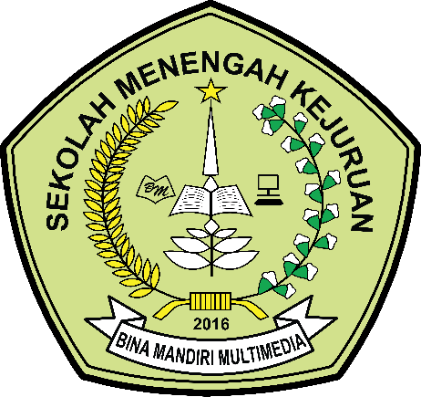
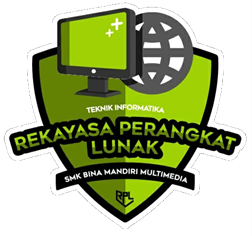
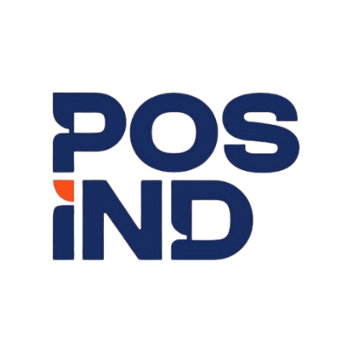

</>
Bahasa & database
- PHP
- MySQL
- HTML5
- CSS3
- JavaScript
Halo, kenalan yuk!
Aku Muhamad Ridho, siswa Rekayasa Perangkat Lunak di SMK Bina Mandiri Multimedia. Aku suka membangun aplikasi web dengan PHP dan MySQL, dari game sederhana sampai aplikasi kasir dan sistem absensi QR.
✦ lagi belajar & membuat aplikasi web
kenalin
Aku Muhamad Ridho, biasa dipanggil Ridho. Siswa RPL yang suka mengubah ide jadi aplikasi web yang bisa dipakai.
Aku siswa Rekayasa Perangkat Lunak (RPL) di SMK Bina Mandiri Multimedia. Dari kelas 10 sampai 12 aku belajar mulai dari logika pemrograman lewat game di Construct 2, lalu membuat aplikasi web berbasis PHP dan MySQL.
Pada 12 Januari sampai 1 Juli 2026 aku PKL di PT Pos Indonesia, Cileungsi, dan membuat website absensi QR untuk kantor pos. Aku terbiasa mengatur waktu dengan disiplin dan nyaman bekerja dalam tim.
Sertifikat PKL (PDF) ↗tools of my trade
Menyimpan dan mengelola data untuk aplikasi web
Membuat tampilan dasar dengan Figma dan Canva
Menguasai Word, Excel, dan PowerPoint
Mengelola waktu dengan baik dan bekerja dalam tim
selected work · 04
Kumpulan proyek yang pernah aku kerjakan dari kelas 10 sampai kelas 12.
Website · Proyek PKL · 01
Sistem absensi dengan scan QR lewat kamera HP atau laptop. Admin memantau kehadiran, telat, izin, dan sakit secara real-time. Karyawan absen, mengajukan izin atau sakit, dan membawa kartu identitas digital berkode QR.
Klik gambar untuk memperbesar.
Website · Kasir & pemesanan · 02
Aplikasi pemesanan coffee shop dengan tiga hak akses. Admin mengelola menu, stok bahan, karyawan, dan laporan. Kasir melayani pesanan lewat tampilan POS dan mencetak struk. Pembeli bisa memesan sendiri dari menu.
Game · Construct 2 · 03
Game edukasi yang dibuat dengan Construct 2. Pemain mengambil sampah yang jatuh dan memasukkannya ke tempat sampah yang sesuai: B3, anorganik, atau organik. Ada menu utama, halaman penjelasan cara bermain, skor, dan tampilan game over.
Klik gambar untuk memperbesar.
Desain UI · Figma · 04
Rancangan tampilan aplikasi mobile untuk memesan makanan dan dessert, dibuat di Figma. Mulai dari halaman masuk, beranda dengan kategori menu, pencarian, akun, pilihan pengantaran, keranjang pesanan, sampai halaman sukses setelah pesan.
Klik gambar untuk memperbesar.
◆ Setiap proyek jadi bagian seru dari proses belajarku.
my learning journey


Sekolah & program keahlian
Rekayasa Perangkat Lunak (RPL): belajar pengembangan perangkat lunak, database, dan pembuatan aplikasi web.
Website sekolah ↗
Praktik kerja lapangan · 12 Jan sampai 1 Jul 2026
Enam bulan PKL di bagian gudang dan pelayanan Kantor Pos untuk mengenal dunia kerja.
let's keep in touch
Terima kasih sudah mampir ke portofolioku. Semoga kita bisa berbagi cerita dan ide!
salam hangat, Ridho ⚡ · Cileungsi, Kabupaten Bogor